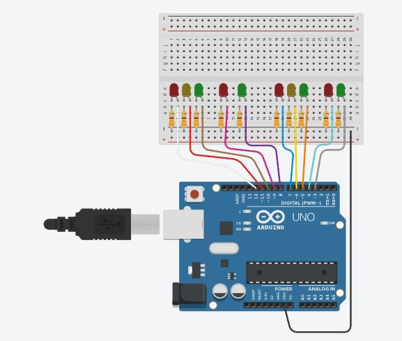

DISEÑO MONTAJE EN TINKERCAD  CODIGO int Semaforo_Rojo_1 = 12; int Semaforo_Amarillo_1 = 11; int Semaforo_Verde_1 = 10; int Peatonal_Rojo_1 = 9; int Peatonal_Verde_1 = 8; int Semaforo_Rojo_2 = 7; int Semaforo_Amarillo_2 = 6; int Semaforo_Verde_2 = 5; int Peatonal_Rojo_2 = 4; int Peatonal_Verde_2 = 3; void setup() { pinMode(Semaforo_Rojo_1, OUTPUT); pinMode(Semaforo_Amarillo_1, OUTPUT); pinMode(Semaforo_Amarillo_1, OUTPUT); pinMode(Semaforo_Verde_1, OUTPUT); pinMode(Peatonal_Rojo_1, OUTPUT); pinMode(Peatonal_Verde_1, OUTPUT); pinMode(Semaforo_Rojo_2, OUTPUT); pinMode(Semaforo_Amarillo_2, OUTPUT); pinMode(Semaforo_Verde_2, OUTPUT); pinMode(Peatonal_Rojo_2, OUTPUT); pinMode(Peatonal_Verde_2, OUTPUT); } void loop() { digitalWrite(Semaforo_Verde_1, HIGH); digitalWrite(Peatonal_Rojo_1, HIGH); digitalWrite(Semaforo_Rojo_2, HIGH); digitalWrite(Peatonal_Verde_2, HIGH); delay(3000); digitalWrite(Semaforo_Verde_1, LOW); digitalWrite(Semaforo_Amarillo_1, HIGH); delay(1000); digitalWrite(Semaforo_Amarillo_1, LOW); digitalWrite(Peatonal_Rojo_1, LOW); digitalWrite(Semaforo_Rojo_2, LOW); digitalWrite(Peatonal_Verde_2, LOW); digitalWrite(Semaforo_Rojo_1, HIGH); digitalWrite(Peatonal_Verde_1, HIGH); digitalWrite(Semaforo_Verde_2, HIGH); digitalWrite(Peatonal_Rojo_2, HIGH); delay(3000); digitalWrite(Semaforo_Verde_2, LOW); digitalWrite(Semaforo_Amarillo_2, HIGH); delay(1000); digitalWrite(Semaforo_Rojo_1, LOW); digitalWrite(Peatonal_Verde_1, LOW); digitalWrite(Semaforo_Amarillo_2, LOW); digitalWrite(Peatonal_Rojo_2, LOW); }